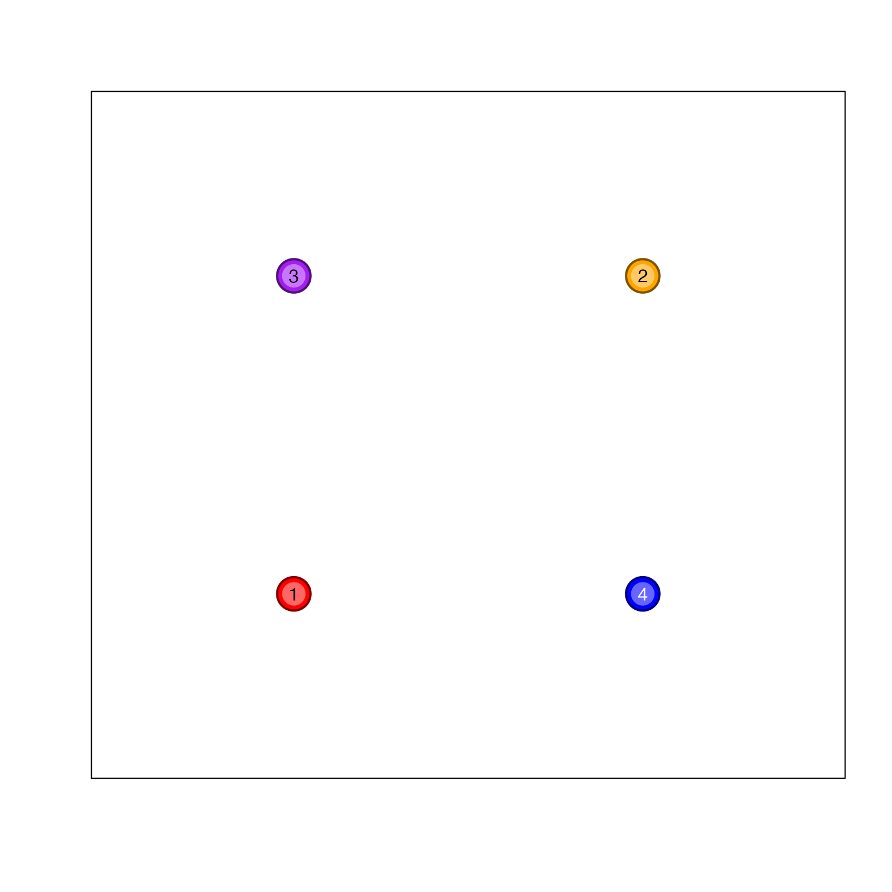

Makes R colors darker or lighter based upon darkFactor
Usage
makeColorDarker(
hexColor,
darkFactor = 2,
sFactor = 1,
fixAlpha = NULL,
verbose = FALSE,
keepNA = FALSE,
useMethod = 1,
...
)Arguments
- hexColor
charactervector of colors to adjust- darkFactor
numericvalue to adjust darkness, values above 1 make the color darker, values below 1 (or below 0) make the color brighter.- sFactor
numericvalue to adjust saturation, values above 1 become more saturated.- fixAlpha
numeric, default NULL, to assign a fixed alpha transparency value, where 0 is transparent and 1 is opaque.- verbose
logicalindicating whether to print verbose output.- keepNA
logical, default FALSE, whether to keep NA values as NA values in the output, otherwise NA values are considered grey input.- useMethod
integerwith two alternate methods,1is default.- ...
Additional arguments are ignored.
Details
This function was originally intended to create border colors, or to create slightly darker colors used for labels. It is also useful for for making colors lighter, in adjusting color saturation up or down, or applying alpha transparency during the same step.
Note when colors are brightened beyond value=1, the saturation is gradually reduced in order to produce a visibly lighter color. The saturation minimu is set to 0.2, to maintain at least some amount of color.
See also
Other jam color functions:
alpha2col(),
applyCLrange(),
col2alpha(),
col2hcl(),
col2hsl(),
col2hsv(),
color2gradient(),
fixYellow(),
fixYellowHue(),
getColorRamp(),
hcl2col(),
hsl2col(),
hsv2col(),
isColor(),
kable_coloring(),
rainbow2(),
rgb2col(),
setCLranges(),
setTextContrastColor(),
showColors(),
unalpha(),
warpRamp()
Examples
colorV <- c("red","orange","purple","blue");
colorVdark2 <- makeColorDarker(colorV, darkFactor=2);
colorVlite2 <- makeColorDarker(colorV, darkFactor=-2);
showColors(cexCellnote=0.7,
list(
`darkFactor=2`=colorVdark2,
`original colors`=colorV,
`darkFactor=-2`=colorVlite2
));
# these adjustments work really well inside a network diagram
# when coloring nodes, and providing an outline of comparable
# color.
plot(x=c(1,2,1,2), y=c(1,2,2,1), pch=21,
xaxt="n", yaxt="n", xlab="", ylab="",
xlim=c(0.5,2.5), ylim=c(0.5,2.5),
bg=colorV, col=colorVdark2, cex=4, lwd=2);
graphics::points(x=c(1,2,1,2), y=c(1,2,2,1), pch=20, cex=4,
col=colorVlite2);
# Making a color lighter can make it easier to add labels
# The setTextContrastColor() function also helps.
graphics::text(x=c(1,2,1,2), y=c(1,2,2,1), 1:4,
col=setTextContrastColor(colorVlite2));
